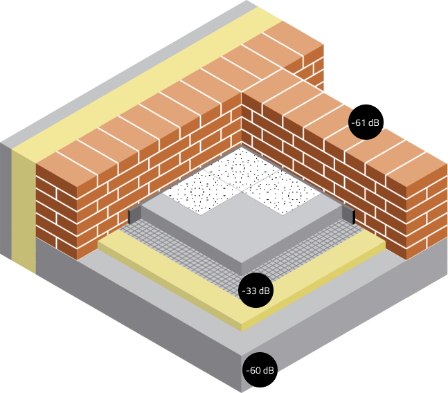
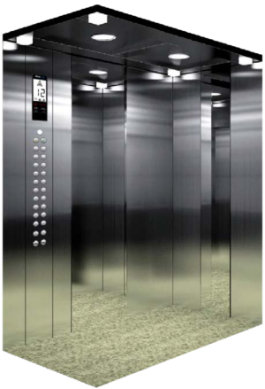

7 барьеров для звукоизоляции
Жить в соседних квартирах и не беспокоить друг друга сложно, но мы решили эту задачу при
помощи оптимальных инженерных сисем.
Полметра тишины
Считается, что дом из традиционного кирпича самый надежный, однако технологии не
стоят на месте. Мы возводим дома из привычного кирпича и из высококачественных
газоблоков. Толщина стены составляет 43 см благодаря кладке или блоку в 250 мм,
минераловатному утеплителю в 150 мм, оштукатуренному фасаду или облицовочному
кирпичу. Газобетон лучше кирпича удерживает низкочастотный структурный шум, например
от работающего кондиционера или сверления стены.
Тихий пол
От проникновения структурного шума каждая квартира защищена звукоизоляционной
минеральной плитой «Эковер стэп» 30 мм толщиной, лучшей в своем семействе. Параметр
звукопоглощения измеряется от 0 до 1. Материалы со значениями, близкими к нулю, звуки
отражают, близкие к единице — поглощают. «Эковер степ» имеет коэффициент 0,94, а
значит, вбирает в себя все структурные шумы и гасит их. В наших квартирах нет
ощущения, будто соседи «ходят по потолку», не слышно бегающих малышей, танцующих пар
и топота собачьих лап.
За каменной стеной
Между квартирами мы устанавливаем стены из керамического кирпича толщиной 250 мм.
Показатель звукоизоляции для такой стены достигает 61 Дб. Жители домов ГК «Альфа» не
слышат соседей с вокальными данными, звонки телефонов и громкую музыку, как это
происходит в домах с пазогребневыми перегородками.
Бесшумное движение
Лифтовые шахты в наших домах изолированы и не примыкают к комнатам. Это решение
закладывается на этапе проектирования каждого объекта и также направлено на снижение
уровня шума и вибраций, создаваемых подъемными устройствами. Чем тише лифт, тем
комфортнее проживание в доме. Помимо этого выполняется дополнительная шумо- и
виброизоляция шахт. Мы выбрали для наших домов лифты премиальной марки BLT, которые
практически не издают звука во время работы. Лифт не слышно ни на последнем этаже, ни
на первом. Все механизмы лифта — двери, автоматика, главный привод, тормоза, отводные
блоки, ролики — работают тихо и без посторонних звуков, нет вибраций, не скрипит
кабина при движении.

Только спокойствие
Во всех квартирах устанавливаются сейфовые входные двери современного дизайна с
дополнительным шумопоглощением. Усиленный металлический короб, двойной контур
уплотнения, минеральный звукоизоляционный слой — лучшие синонимы для слова
«надежность».
Пятикамерная защита
Шумозащитные окна европейского бренда VEKA имеют 5 внутренних камер, которые
останавливают холод и звук. Стеклопакет из трех стекол и двух воздушных камер
обеспечивает коэффициент звукоизоляции 25–29 дБ. Премиальная оконная фурнитура
SIEGENIA, произведенная в Германии, рассчитана на 20–25 тысяч циклов
открываниязакрывания и будет служить не менее 20 лет.
Долой все лишнее
Помимо применения современных материалов и систем, мы выстраиваем физические преграды
против шумов. Так, у 80% квартир внутренние коммуникации вынесены в общий коридор,
поэтому у жителей просто нет возможности слышатьм звук льющейся или спускаемой у
соседей воды.
Питьевая вода в каждой квартире
Человек ежедневно нуждается в 2-3 литрах качественной питьевой воды. Ее принято покупать в
тяжелых бутылях, оплачивать курьерскую доставку или устанавливать в квартире фильтры.
Жители наших домов не сталкиваются с этими хлопотами и лишними расходами. В техническом
помещении каждого дома ГК «Альфа» смонтирована система очистки воды до уровня питьевой.
Чтобы попасть в кран на кухне, вода проходит 6 ступеней фильтрации:
1 ступень
Механическая очистка воды от крупных частиц и примесей
2 ступень
Удаление нежелательного железа и марганца
3 ступень
Извлечение солей кальция и магния, вызывающих образование накипи
4 ступень
Процесс обратного осмоса, при котором молекулы воды пропускаются, а другие
химические соединения уходят в дренаж
5 ступень
Обеззараживание и удаление бактерий, чтобы питьевая вода была безопасной для
организма человека
6 ступень
Внутриквартирный фильтр тонкой очистки (постфильтр) установлен на каждой кухне и
запускается непосредственно перед наливом воды
Управляющая компания регулярно обслуживает водоочистное оборудование, меняет фильтры и раз
в квартал проводит санитарно-эпидемиологическую и гигиеническую лабораторные экспертизы
качества питьевой воды. Вода соответствует государственным санитарным нормам и правилам
(СанПиН) 1.2.3685-21 «Гигиенические нормативы и требования к обеспечению безопасности и
(или) безвредности для человека факторов среды обитания».
Для учета воды установлен отдельный счетчик, который автоматически отправляет показания в УК.
Для учета воды установлен отдельный счетчик, который автоматически отправляет показания в УК.
Автономная котельная
Во многих домах своя автономная котельная, независимая от городских сетей. Поэтому в
квартирах всегда есть горячая вода и отопление в сезон, не нужно устанавливать
индивидуальные водонагреватели.
Надежнее центральных сетей
В котельной смонтированы сетевой и резервный насосы, которые обеспечивают циркуляцию
теплоносителя. Если первый выйдет из строя, дом не останется без отопления, ведь тут
же запустится резервный.
Котельная имеет водогрейные газовые котлы, которые обеспечивают теплом все помещения дома, а также нагревают воду для горячего водоснабжения. Каждый котел имеет свою независимую систему безопасности с индивидуальным автоматическим блоком управления. Срок службы котлов не менее 20 лет.
Использовать современные котельные так же безопасно, как централизованные системы. Весь процесс создания автономной котельной — от проектирования до ввода в эксплуатацию — контролируется надзорными органами. В контур управления котельной встроены сигнальные системы, которые сообщают диспетчерам обслуживающей организации о любой нештатной ситуации и в случае аварии блокируют работу оборудования.
Котельная имеет водогрейные газовые котлы, которые обеспечивают теплом все помещения дома, а также нагревают воду для горячего водоснабжения. Каждый котел имеет свою независимую систему безопасности с индивидуальным автоматическим блоком управления. Срок службы котлов не менее 20 лет.
Использовать современные котельные так же безопасно, как централизованные системы. Весь процесс создания автономной котельной — от проектирования до ввода в эксплуатацию — контролируется надзорными органами. В контур управления котельной встроены сигнальные системы, которые сообщают диспетчерам обслуживающей организации о любой нештатной ситуации и в случае аварии блокируют работу оборудования.
Снижение затрат
Модульная котельная устанавливается на крыше дома, поэтому путь от нее до квартир
короткий, а значит, теплопотерь почти нет. Автоматика общедомовой котельной «следит»
за температурой на улице – в морозы теплоноситель подогревается сильнее, в оттепель
подача тепла сокращается. Собственники квартир получают именно ту услугу, за которую
платят, — качественное отопление в любой мороз и бесперебойное горячее водоснабжение.
Лифты премиум-класса
Мы знаем, как важно жителям многоэтажного дома не ждать подолгу лифт, особенно утром и
вечером, когда соседи отправляются на работу и возвращаются домой. Поэтому в жилых
комплексах ГК “Альфа” устанавливаются пассажирские и грузопассажирские лифты с
увеличенным проемом для габаритных предметов.
Улучшенные характеристики лифтов BLT
Уровень шума
25-30 дБ
25-30 дБ
Такой уровень шума сравним с шелестом листьев или обстановкой в библиотеке.
Гигиенически комфортным для человека является уровень шума до 40 дБ.
грузоподъемность 1000 кг/13 человек
Лифты современных жилых комплексов рассчитаны на большой пассажиропоток.
Ширина двери
900 / 1200 мм
900 / 1200 мм
Перевезти детскую коляску, велосипед, мебель, крупную бытовую технику и другие
габаритные вещи в лифте с такой шириной двери не составит труда.
Дизайн в суперлюксовом варианте
Стильный и антивандальный материал внутренней обшивки кабины, зеркальная
нержавеющая сталь с гравировкой, каменный пол, прозрачное защитное пластиковое
покрытие, которым кабина будет обшита на время заселения дома.
Комфортное пользование
Плавность хода лифта, эстетически приятное оформление кабины, яркое светодиодное
освещение, индикация на каждом этаже, речевой информатор, объявляющий этажи,
просторность кабины.
Скорость перемещения лифта в домах ГК “Альфа” (м/сек)
Высота дома
(этажей)
Класс дома
“Стандарт”
“Комфорт”
до 10
1
1
до 15-16
1
1,6
до 2
1,6
2
Импортные подъемные устройства компании BLT можно назвать «мерседесом среди лифтов».
Момент начала движения в них почти не ощущается, настолько тихо и плавно двигается
кабина. Они отличаются оптимальной скоростью открывания-закрывания дверей, четким
откликом на нажатие кнопок, ювелирным замедлением и отправлением без задержек — все
это экономит драгоценные секунды в пути. Лифты не имеют машинного помещения в виде
надстройки на крыше. Это благоприятно сказывается на облике современного дома.

В наших домах монтируется горизонтальная отопительная система из труб финской марки UPONOR
Гибкие трубы из поперечно-сшитого полиэтилена с молекулярной памятью Uponor PE-Xa
идеальны для высокотемпературных режимов — 60° C для горячей воды и 90° C для отопления.
Трубы производятся в Швеции, фитинги к ним в Финляндии, а латунные комплектующие в
Германии. Эта высококачественная сертифицированная продукция, в которой не бывает брака,
имеет максимальный срок службы для таких инженерных систем, – 50 лет. Именно столько
жильцы не будут вспоминать, что у них в квартире где-то находится отопительная система.
Мы не просто закупаем трубы и комплектующие, а приглашаем представителей компании Uponor
для контроля монтажа системы перед заливкой полов.
В результате химической модификации двухмерные молекулярные цепи образуют сверхпрочную
трехмерную сеть. Необходимые перепады температур и давления выдерживает только металл,
но он страдает от коррозии и отложений, что негативно влияет на срок службы. Трубы
Uponor не подвержены ни тому, ни другому, они умеют растягиваться и принимать прежнюю
форму, когда температура падает. Трубы имеют меньшее количество соединений, что сводит
вероятность протечек к нулю.
Радиаторы с регулировкой температуры

Нам нравится находить технические решения, которые делают жизнь людей легче и
приятнее. Поэтому мы устанавливаем стальные радиаторы Buderus. Они изготовлены из
экологически безвредных материалов и имеют двухслойное антикоррозийное покрытие.
При окрашивании используются составы без соединений тяжелых металлов и
формальдегидных смол. Радиаторы Buderus прошли сертификацию и подтвердили
соответствие ГОСТ 31311-2005. А еще за ними легко ухаживать.
Термоголовка радиатора
К плюсам устройства можно отнести не только простоту в уходе и стильный внешний
вид, но и невысокую тепловую инерцию, которая позволяет задавать в помещении
нужную температуру. Здесь пользователю на помощь приходит термоголовка с
температурным регулятором. На ней есть шкала от 1 до 5, которая соответствует
температурным характеристикам — 19, 21, 23 градуса. Режим «снежинки» включает
минимальную температуру для простой циркуляции. Термоголовка оснащена пазами,
через которые проходит воздух. Его температура автоматически считывается и
происходит открытие-закрытие внутреннего клапана-регулятора. Благодаря этой
системе в каждой комнате можно задать нужную температуру.
Двусторонний моющийся радиатор
Двумя легкими нажатиями можно снять верхнюю решетку прибора и промыть его внутри
от пыли. Если во время эксплуатации случайно повредилось лакокрасочное покрытие,
этот радиатор можно перевернуть другой стороной к стене, ведь у него нет
наваренных кронштейнов, как у стандартных отопительных приборов.
Бесшумная канализация
С соседями хорошо здороваться в лифте и встречаться в общем парке, но знать об их
распорядке дня и привычках - это лишнее.
Новый уровень комфорта
Для приватной жизни каждой семьи ГК «Альфа» проектирует бесшумные канализационные
системы. Жители наших домов не слышат по утрам звуков льющейся воды из соседних квартир
благодаря шумопоглащающим трубам «Дигор Люкс» и вынесенным в места общего пользования
стоякам. Система внутренней канализации «Дигор Люкс» специально разработана для домов с
повышенными требованиями к комфортности. По сравнению с обычными серыми
полипропиленовыми трубами с толщиной стенок 2,7 мм белые трубы
«Дигор Люкс» имеют трёхслойную структуру и увеличенную до 3,5 мм толщину. Благодаря
этому уровень шума от сливных вод снижается в 1,5–2 раза. Конструкция раструбов и
фитингов труб «Дигор Люкс» соответствует европейским стандартам и отлично совмещается с
продукцией других производителей. Все канализационные трубы зашиваются в короба с
дополнительной шумоизолирующей прокладкой.